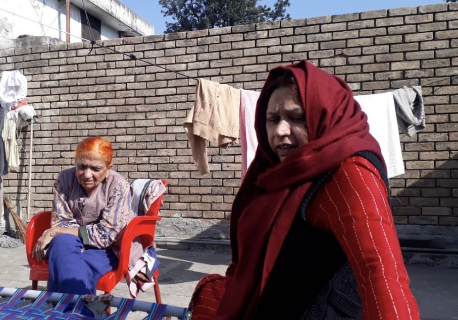
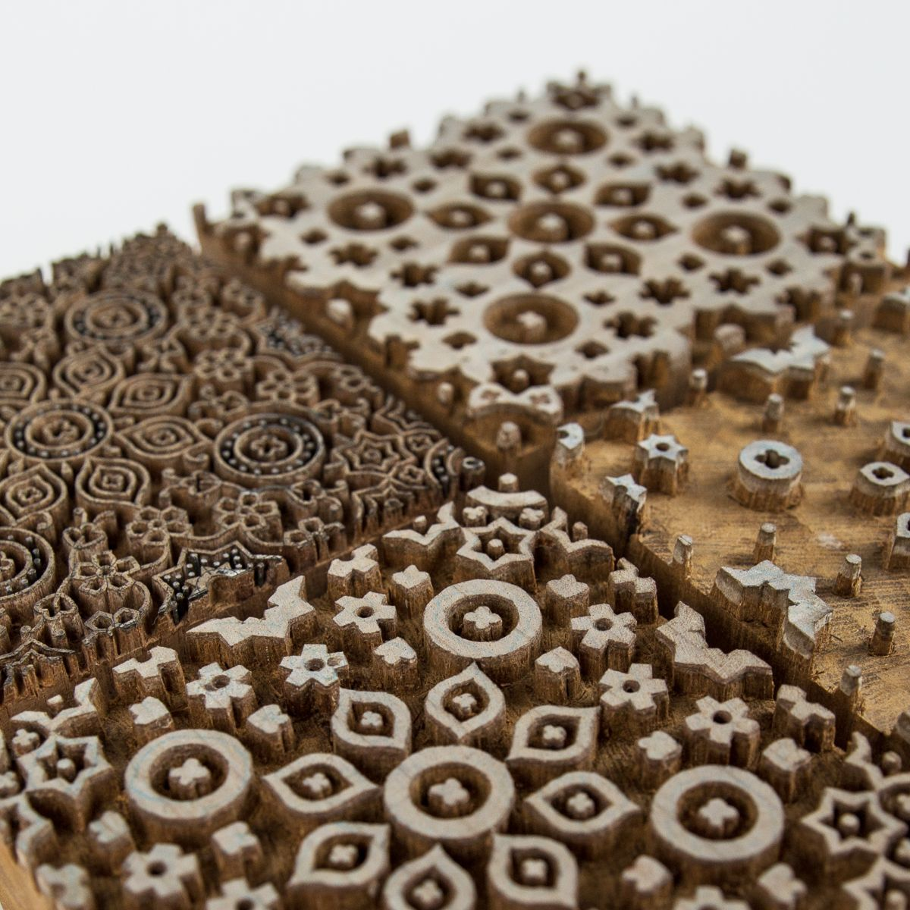
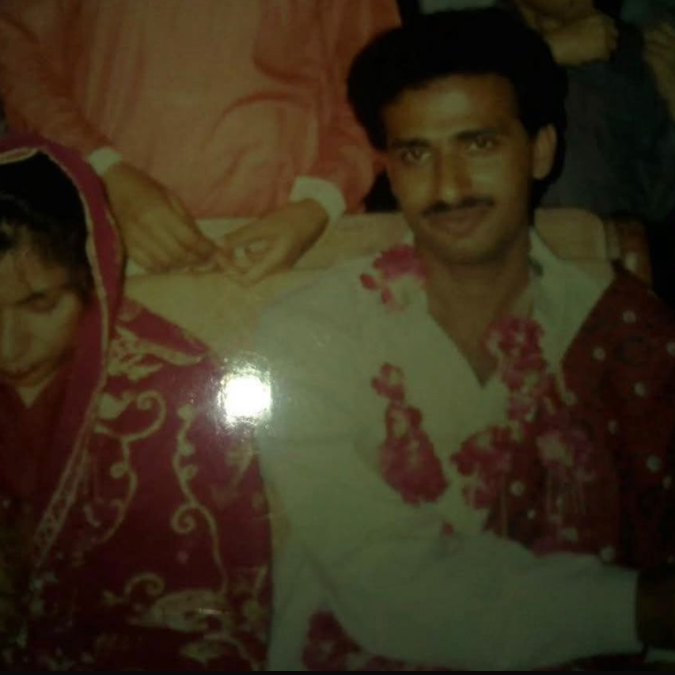
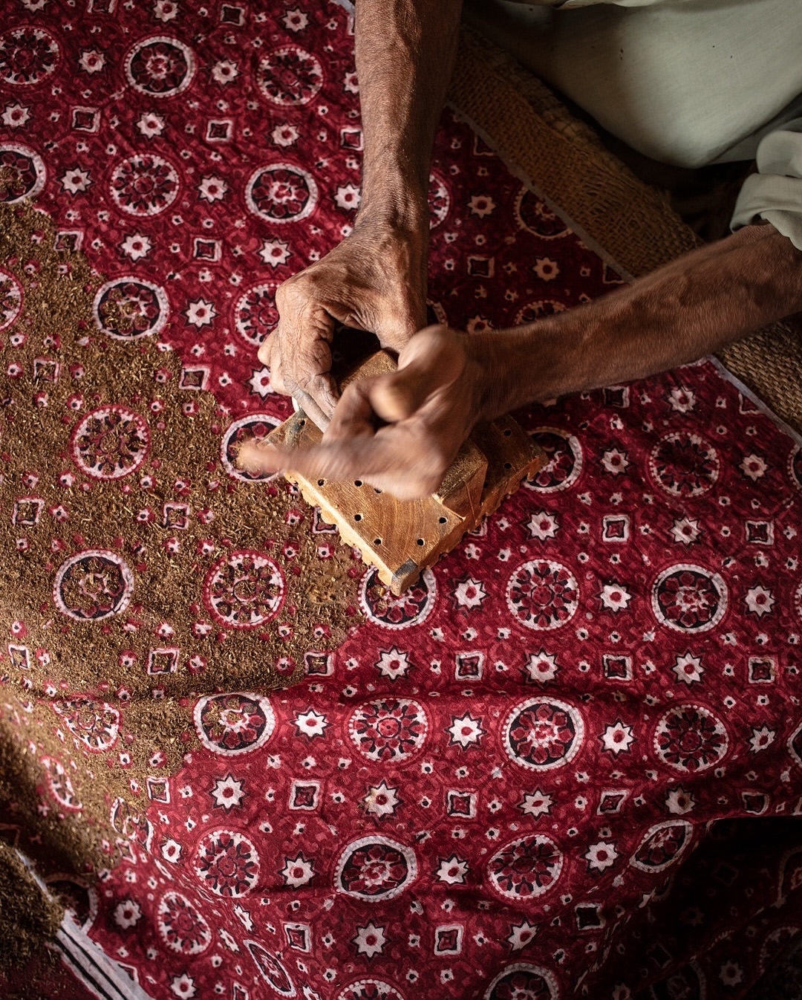

A QUIET
INHERITANCE
BORN IN SINDH, WHERE MY ROOTS TAKE HOLD, THE AJRAK CARRIES FIVE THOUSAND YEARS IN ITS THREADS, ECHOING THE INDUS VALLEY'S ANCIENT BREATH.

THE GEOMETRY MIRRORS THE COSMOS, AS IF THE WHOLE UNIVERSE WAS FOLDED TENDERLY, GENTLY ONTO FABRIC, WOVEN INTO CLOTH, STITCH BY STITCH.

EACH MOTIF IS HAND-STAMPED WITH DEVOTION, INDIGO DEEP AS LOYALTY, CRIMSON BRIGHT WITH COURAGE, EACH STITCH A QUIET DEVOTION.
WORN IN JOY AND IN MOURNING, THE AJRAK MOVES THROUGH GENERATIONS, ADAPTING YET ENDURING, CARRYING MEMORY, GENERATION TO GENERATION.


I WAS ADORNED IN ONE AS A BABY AND TODAY, STILL, I FEEL HOME AND DIGNITY WITHIN ITS FOLDS. STEADY COMFORT IN ITS WEIGHT.